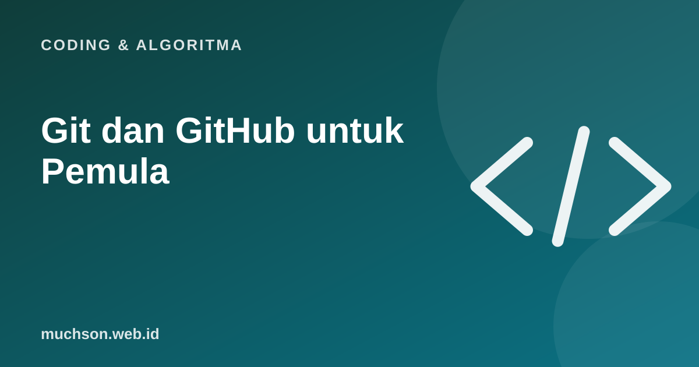

Beranda › Artikel › Coding & Algoritma
Coding & AlgoritmaGit dan GitHub untuk Pemula: Konsep, Perintah, dan Alur Kerja
Pernah menyimpan file bernama "laporan_final_revisi_baru_FIX2"? Git menyelesaikan masalah itu untuk kode: setiap perubahan tercatat, bisa dibatalkan, dan bisa dikerjakan bersama tanpa saling menimpa.

Git dan GitHub itu berbeda
Konsep inti
Alur kerja sehari-hari
| Perintah | Fungsi |
|---|---|
| git init | Mulai melacak folder dengan Git |
| git status | Lihat file apa yang berubah |
| git add . | Siapkan semua perubahan untuk commit |
| git commit -m "pesan" | Simpan perubahan dengan pesan |
| git log --oneline | Lihat riwayat commit singkat |
| git branch nama | Buat cabang baru |
| git switch nama | Pindah ke cabang |
| git merge nama | Gabungkan cabang ke yang aktif |
| git push | Kirim commit ke GitHub |
| git pull | Ambil perubahan terbaru dari GitHub |
Peringatan penting
Jangan pernah meng-commit kunci rahasia, kata sandi, atau file .env. Bila terlanjur, anggap rahasianya bocor, ganti, dan hapus dari riwayat. Gunakan file .gitignore untuk mengecualikan file sensitif.
Tanya jawab
Apakah saya perlu GitHub untuk memakai Git?
Tidak. Git berjalan di komputer sendiri. GitHub berguna untuk cadangan, berbagi, dan kerja tim.
Bagaimana membatalkan commit terakhir?
Ada beberapa cara tergantung situasi (revert atau reset). Pelajari perbedaannya sebelum memakai perintah yang menghapus riwayat.
Apa itu conflict?
Terjadi ketika dua perubahan menyentuh bagian yang sama dan Git tidak bisa memutuskan. Anda memilih hasil akhirnya secara manual.